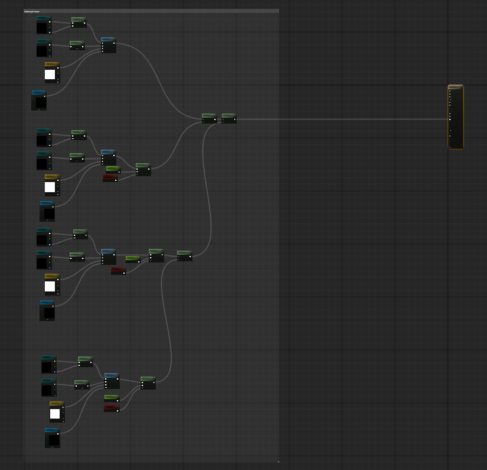
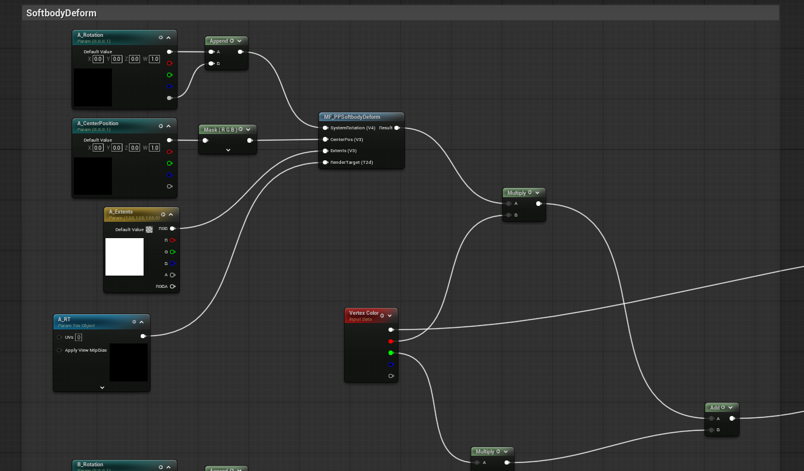
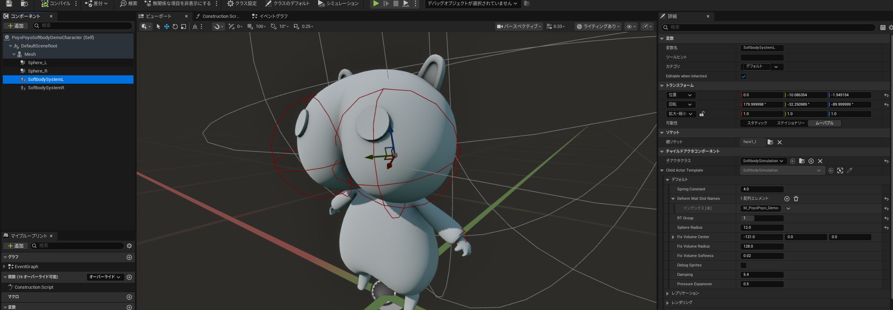
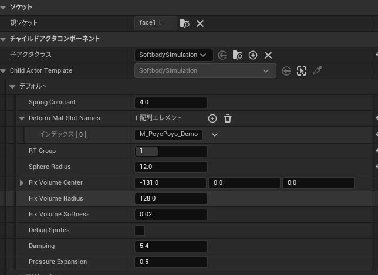
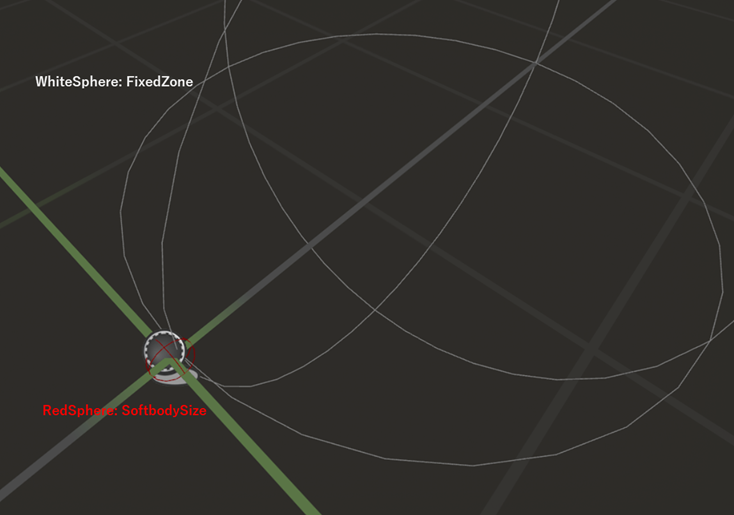
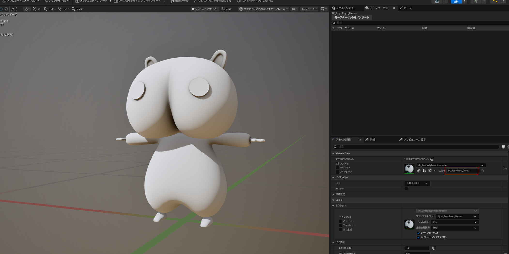
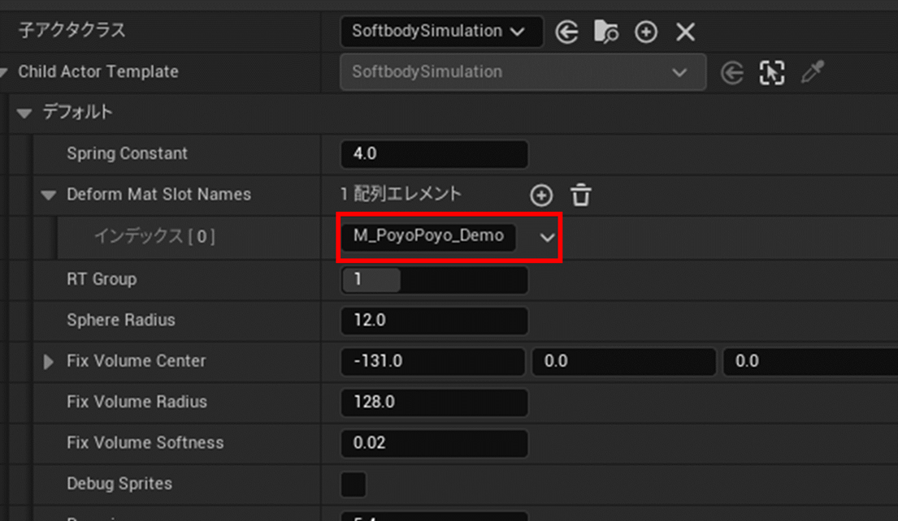
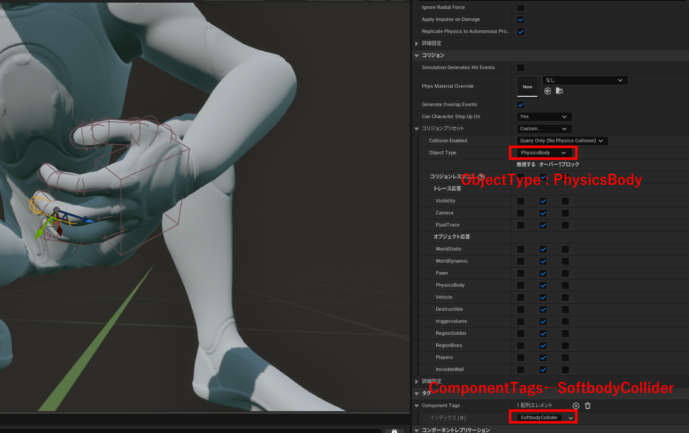
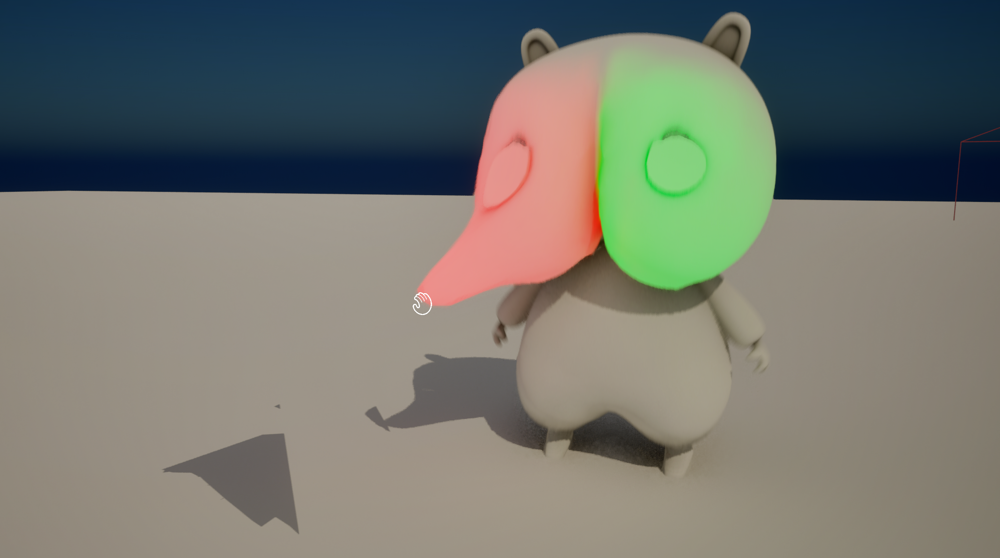

Overview
PoyoPoyo Softbody is a soft body deformation system for Unreal Engine.
It deforms meshes according to a GPU soft body simulation driven by Niagara.
Demo
Features
・Soft body deformation with a sense of volume, based on a 3D mass-spring model simulation
・GPU computation for fast and lightweight performance
・Easy to maintain: not a plugin, but an asset pack made up only of Niagara Systems and Blueprints
・Collision detection with UE's standard Box, Sphere and Capsule collisions
・Multiple jiggling parts can be set up on a single model
・Pulling and dragging, for example with the mouse
Supported Versions
UE5.7 - 5.8
How to Use
Attach SoftbodySystem/Core/SoftbodySimulation as a Child Actor to the mesh you want to deform.
In this system, the Niagara System of the dedicated Actor attached to the mesh writes the displacement of the mass points into a render target, and the mesh is then deformed by the material's World Position Offset based on that data. For this reason, you set up both the material of the mesh and the Actor that contains the mesh.
The dedicated Actor (SoftbodySimulation) creates the render target and the dynamic material instance at runtime and assigns them to the mesh, so you normally do not need to worry about creating render targets or dynamic material instances yourself.
Material Setup
Open SoftbodySystem/Material/M_SoftbodyDemo or M_SoftbodyDemo_VertexColorMask, copy the nodes that lead into World Position Offset into the material of the mesh you want to use, and connect them to its World Position Offset.

Four RenderTargetTextures with the prefixes A, B, C and D are available, but you can increase or decrease this number by editing the asset.
M_SoftbodyDemo_VertexColorMask is an example of masking the displacement amount using the R and G channels of the vertex color.

Actor Setup

Attach SoftbodySystem/Core/SoftbodySimulation as a Child Actor to the part of the mesh you want to deform in the Actor you are using.
Parameters

Parameters of SoftbodySimulation
| Parameter | Description |
|---|---|
| Spring Constant | Spring constant. |
| DeformMatSlotNames | Array of the material slot names of the parts of the mesh that should deform (must be specified). |
| RT Group | When attaching several SoftbodySimulations to a single mesh, specify a unique ID number for each one. |
| Sphere Radius | Radius of the soft body sphere (shown as a red sphere in the viewport). |
| FixVolumeCenter | Local coordinates of the spherical fixing volume that determines which mass points are fixed (shown as a white sphere in the viewport). |
| FixVolumeRadius | Radius of the fixing volume. |
| FixVolumeSoftness | How strongly the boundary of the fixing volume is blurred (0.0 - 1.0). |
| DebugSprites | Displays debug sprites representing the mass points at runtime. |
| Damping | Amount of velocity damping. |
| PressureExpansion | Coefficient that adjusts the amount of expansion caused by internal pressure. |
・About the fixing volume

The soft body sphere is displayed as a red sphere and the fixing volume as a white sphere in the viewport.
If you place them so that part of the red sphere overlaps the white sphere, as in the default state, the mass points inside the overlapping area are fixed relative to the SoftbodySimulation Child Actor component.
RT Group Setup
RT Group specifies which material parameters, such as the render target, are used.
When attaching several SoftbodySimulation components to a single mesh, assign unique numbers in order starting from 0. The material needs parameters starting with the letter that corresponds to the RT Group (0:A, 1:B, 2:C, ...).
Material Slot Names
Open the editor of the SkeletalMesh or StaticMesh you are using and check the material slot names.

Enter the material slot names of every part you want to deform into DeformMatSlotNames on the SoftbodySimulation component described above.

Collision Setup
This system reacts to BoxCollision, SphereCollision and CapsuleCollision components that have the "SoftbodyCollider" tag.

Add the "SoftbodyCollider" tag to the ComponentTags of the collision component you want to use as a collider.
For an example of how pulling is implemented, see SoftbodySystem/Demo/PPS_PlayerCharacter.
ChangeLog
2026/08/08 v1.0.0 ・Initial Release